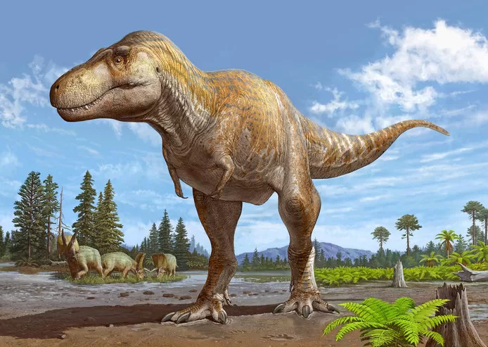
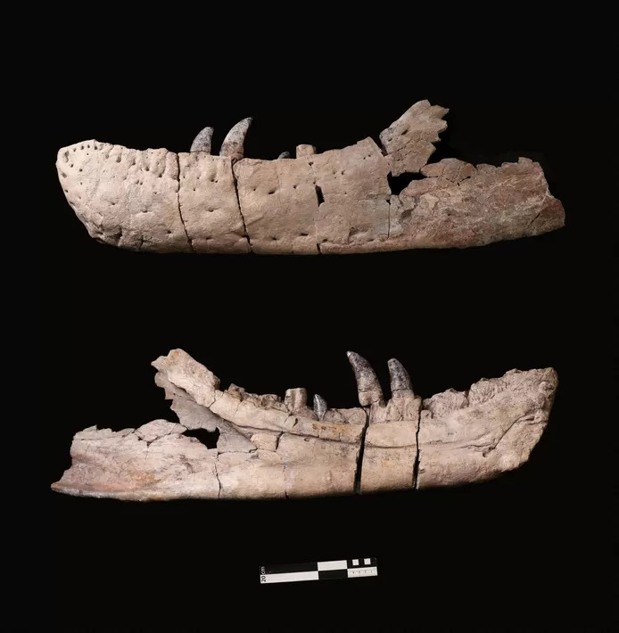
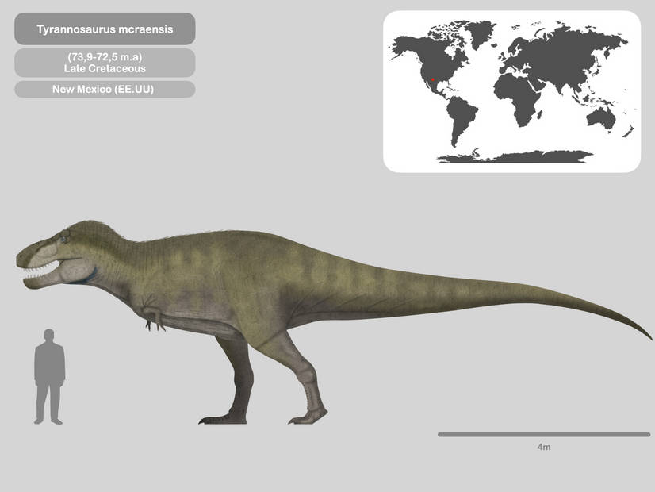

Paleontologen door het dolle heen: na 40 jaar nieuwe, nog grotere T. rex ontdekt
Paleontologen zijn in rep en roer door de ontdekking van een nieuwe tyrannosaurus. De soort leefde miljoenen jaren eerder dan de bekende T. rex, maar was nog groter dan zijn beroemde nazaat. De Tyrannosaurus mcraensis, zoals de nieuwe dino heet, is volgens wetenschappers waarschijnlijk de meest angstaanjagende jager die ooit heeft geleefd.
Paleontologen vonden in de jaren 80 een deel van een schedel van de dino in de Amerikaanse staat New Mexico, preciezer gezegd in de geologische formatie McRae, waar meerdere goed goed geconserveerde overblijfselen van dinosaurussen zijn gevonden. De nieuwe soort is vernoemd naar zijn vindplek.
De Tyrannosaurus rex behoort tot de grootste roofdieren die op aarde hebben geleefd. Wetenschappers schatten dat er ongeveer 2,5 miljard tyrannosaurussen op aarde hebben rondgelopen. Tot nu toe zijn er echter slechts dertig tot veertig min of meer intacte skeletten gevonden, allemaal in de Verenigde Staten.
Kleine afwijkingen
De schedel van de nieuwe soort vertoont veel overeenkomsten met die van een Tyrannosaurus rex. Wetenschappers hadden vanwege kleine afwijkingen altijd al een vermoeden dat ze met een andere dino te maken hadden. Nu, ruim veertig jaar later, weten ze het zeker: de twaalf meter hoge T-rex had een nog veel machtigere voorouder, concluderen ze in het wetenschappelijke tijdschrift Nature.
De machtige Tyrannosaurus mcraensis zou tussen 71 en 73 miljoen jaar geleden geleefd hebben, zo’n vijf tot zeven miljoen voor zijn illustere nakomeling. Volgens de wetenschappers heeft deze dino een krommere onderkaak, een iets slankere schedel en zitten zijn ‘wenkbrauwen’ een stuk lager. Hoewel de twee erg op elkaar lijken, denken paleontologen dat deze soort anders at en jaagde dan de rex. Wel zouden ze aan elkaar gewaagd zijn geweest.
Ongeveer een kwart van de schedel is door wetenschappers gevonden. Het grootste deel van de hersenpan en de bovenkaken ontbreken. Paleontologen zijn in extase door de ontdekking, omdat het een nieuwe wending brengt aan de langlopende discussie over hoeveel soorten tyrannosaurussen er nu eigenlijk waren. Mogelijk dat we nu meer te weten komen over hoe het iconische roofdier zich in de loop der tijd heeft ontwikkeld.
Dol op drumsticks
Onderzoeken naar de oorsprong van dinosaurussen zijn al jaren in volle gang. In december vorig jaar ontdekten wetenschappers voor het eerst prooien in de maag van een tyrannosaurus-skelet, waaruit zou blijken dat de machtige dinosaurussen ‘dol waren op drumsticks’ toen ze jong waren. De restanten werden ontdekt in de fossielen van een Gorgosaurus, een lid van de vleesetende familie waartoe ook de latere T-Rex behoort.
De Gorgosaurus was ongeveer zes jaar oud toen hij 75 miljoen jaar geleden stierf in wat nu Canada is, meldt een studie in het tijdschrift Science Advances. De onderzoekers ontdekten overblijfselen van de laatste maaltijd van deze jonge, 4,5 meter lange tyrannosaurus die nog steeds op zijn plaats bewaard waren gebleven.
Het meest verrassende was, aldus de wetenschappers, dat de kleine beenderen die uit de ribbenkast van de Gorgosaurus staken, toebehoorden aan twee jonge, vogelachtige dinosaurussen genaamd Citipes. Volwassen dieren aten veel grotere prooien.
bron:https://www.hln.be/wetenschap-en-planeet/paleontologen-door-het-dolle-heen-na-40-jaar-nieuwe-nog-grotere-t-rex-ontdekt~a8580cc1/?referrer=https%3A%2F%2Fwww.google.com%2F